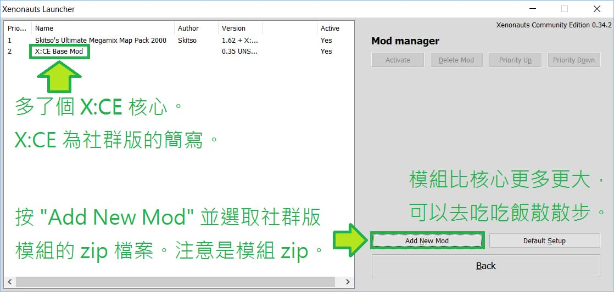

異種航員簡介

異種航員（Xenonauts）為一套獨立制作的戰略遊戲，以經典的傳統 X-COM 為基礎推陳出新。不同於簡化的新 XCOM，異種航員並不簡單。它有多對多的空中纏鬥，也能精確操作十多名士兵的動作和背包。你很難將失敗歸咎於怨隨機數，勝利也只可能是你的努力成果。
遊戲背景是冷戰時期的地球被外星人入侵，各國聯手成立一個秘密組織守衛地球。你需要興建基地駐紮戰鬥機，擊落幽浮然後派出地面部隊回收墜地的幽浮，將外太空的先進技術帶回家研發。艱苦的戰鬥、多變的戰術、全球戰略和地面戰術兩者相輔相成都繼承了 X-COM 的招牌魅力。
我花了約兩個月漢化異種航員，讓大家不用捧著手機逐字查都只能一知半解。如對漢化有意見，最可靠的討論方法是上 GitHub 專頁。語法用詞跟兩地可能有顯著差異，請多多包涵。
作為獨立遊戲，異種航員價格低廉。GOG 和 Steam 都常常打折，撰文時 GOG 折後只需 56人民幣/260新台幣，比大部分電影票便宜。請支持遊戲產業。 - Sheepy
漢化包安裝步驟
步驟略多但只需做一次，請小心看清楚指示。
1. 安裝社群版
漢化包是為社群版而設，該版是對原版遊戲的改良，強烈建議安裝。
本步驟假設你已經正常地安裝了異種航員。當你執行遊戲時，會出現英文版的啟動器。
Steam 平台的版本可以關閉啟動器，然後在 Steam 遊戲內容的測試頁中切換成 Community 版本（不需測試碼），等完成後就可以跳到漢化安裝。
其他無 DRM 的版本（Humble 版、GOG 版）請到官網下載社群版和社群版模組。撰文時的最新版為 0.34.2，可以到 Google 雲端硬碟 下載。只要能完成這安裝，後面就比較容易。

（如果模組管理中出現一大堆項目，那是裝錯了社群版模組。不用刪除，回到 Add New Mod 安裝另一個非模組的社群版 zip 就可以。）
2. 安裝社群版模組
社群版只是最基本的修正，大部分的增強內容都放在模組裡。

（如果模組管理中沒有 X:CE 項目，那是沒裝到社群版，請回到上一步重新安裝。）
（以上是英文社群版的安裝程序。英文夠好的話已經可以直接玩！）